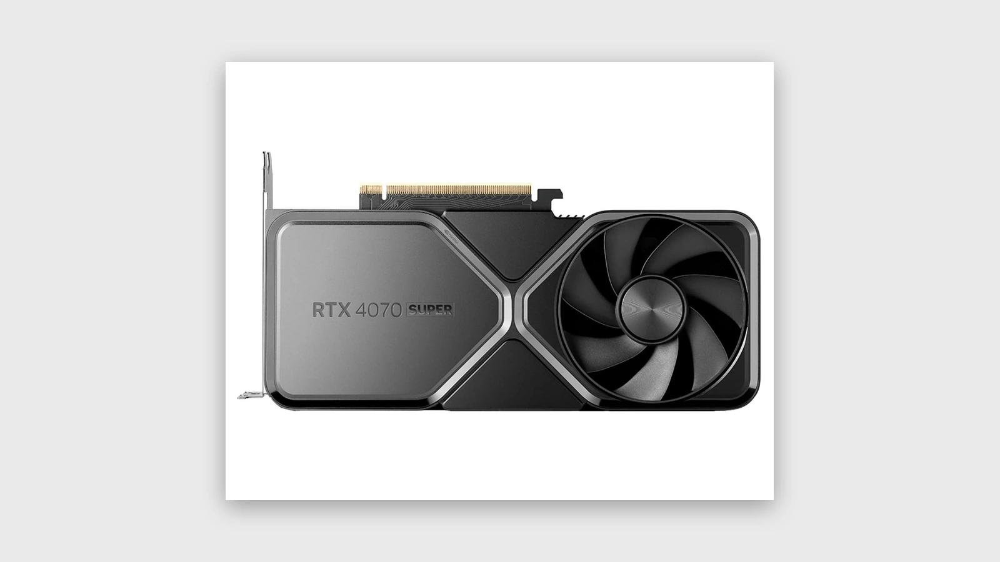
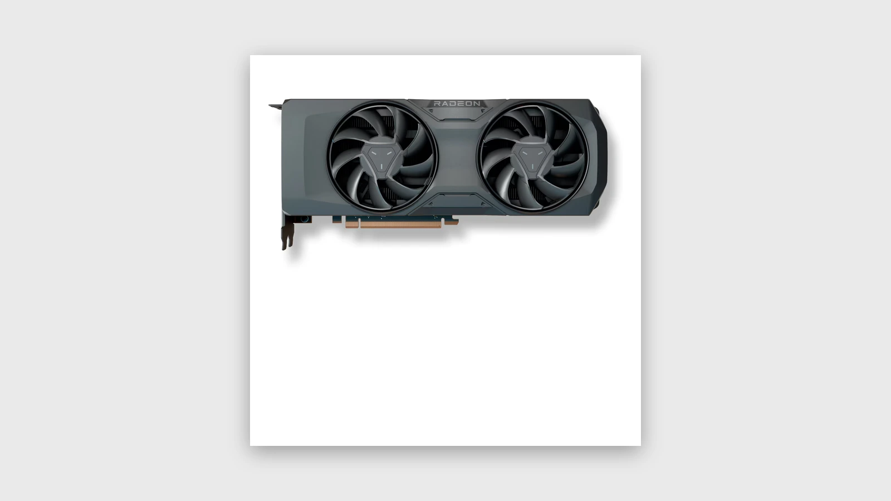
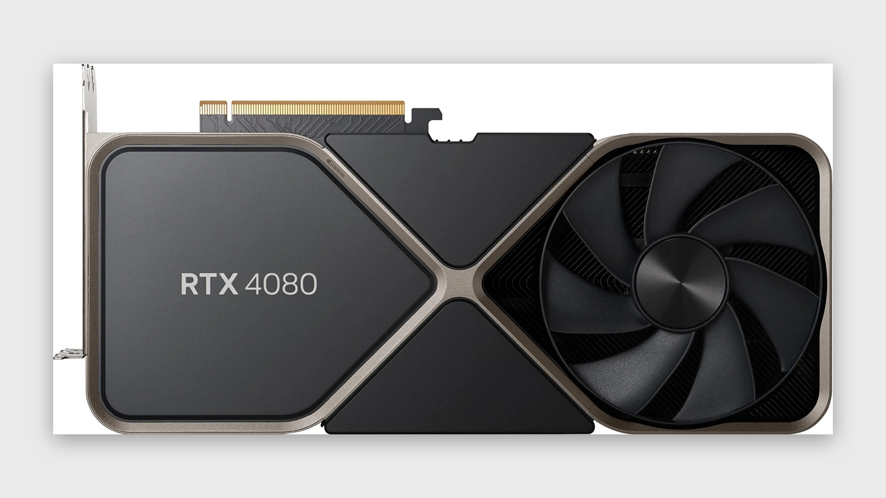

Beste GPU's voor 1440p gaming
1440p gaming is de sweet spot. Maar de meeste mensen kiezen hun GPU verkeerd. Ze kopen te zwaar, te duur, of compleet uit balans met de rest van hun systeem.
RTX 4070 Super

De RTX 4070 Super is voor de meeste mensen de beste balans tussen prijs en performance. Sterk in moderne titels, efficiënt onder belasting en meestal makkelijker thermisch onder controle te houden.
RX 7800 XT

Sterk alternatief met veel VRAM. Interessant voor wie raster performance prioriteit geeft boven features zoals DLSS.
RTX 4080

Overkill voor 1440p in veel situaties. Alleen logisch als je ook richting 4K gaat of maximale headroom wilt.
Waar moet je op letten?
- • Minimaal 12GB VRAM
- • Goede koeling en airflow
- • Efficiëntie onder load
- • Jouw specifieke use-case
Conclusie
De beste GPU is niet de duurste, maar degene die past bij jouw setup en gebruik.
Start jouw custom build →